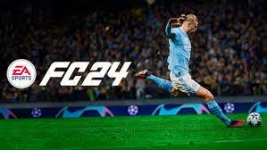

Fique ligado nas novidades!!!

EA Sports FC 24 ou FIFA 24?
A Electronic Arts (EA Sports) e Federação Internacional de Futebol (FIFA) encerraram sua parceria após três décadas.
Segundo o jornal New York Times, as partes não teriam chegado a um acordo após a organização exigir um valor de US$ 1
bilhão (por volta de R$ 4,87 bilhões) a cada quatro
anos para que a série continuasse a usar o nome FIFA. Isso levou
a Electronic Arts a criar sua própria franquia chamada de EA Sports FC. O presidente da instituição, Gianni Infantino,
já anunciou que a federação pretende criar sua própria franquia de futebol com "FIFA 25, 26, 27 e assim por diante", sem
maiores detalhes de quem desenvolveria o
jogo ou quando seria lançado.
Na prática, EA Sports FC 24 é basicamente o que seria FIFA 24, apenas com outro nome. As tecnologias utilizadas no novo
jogo são evoluções das mesmas que já vinham sendo desenvolvidas em FIFA 23, como a nova versão do método de captura de
movimentos Hypermotion. O game também irá manter os atletas licenciados oficiais da FIFA com 19 mil jogadores entre 700
times de diversas ligas como UEFA Champions League e Europa League, CONMEBOL Libertadores, Premier League, Bundesliga e
LaLiga.